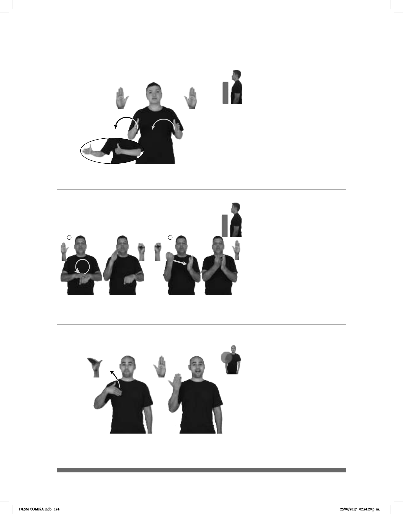

124
(B-P 40)
CURSO ABRIL YA POSPONER
Se pospuso el curso para abril.
Seña: SS
B-P.2
Palmas hacia el centro.
A la altura del pecho.
Los brazos se mueven
formando un arco hacia la derecha.
Ojo derecho
semicerrado, cabeza inclinada, boca
semiabierta.
v. tr. Dejar para más tarde
o retrasar una actividad o cierto acto
previamente anunciado o convenido.
(B-P 41)
LEY PERSONAS CON DISCAPACIDAD YA APROBAR
Se aprobó la ley para personas con discapacidad.
Seña: SC: I. y II. SB
I. MD B-P.2, MB S.1; II.
MD S.1, MB B-P.2
I. MD palma hacia abajo.
MB palma hacia abajo; II. MD palma
hacia adentro, MB palma hacia derecha.
I. MD sobre MB. MB a la
altura de la cintura: II. MD y MB a la
altura del pecho.
I. La MD se mueve
formando un círclo hacia enfrente; II. La
MD golpea la MB en línea recta.
v. tr. Autorizar, quien tiene
facultad para ello, alguna solicitud,
propuesta, etc. que se presenta a su
consideración.
Seña: SM
Seña que pasa de
B-P.7 a B-P.2
Palma hacia adentro.
Dedos sobre el pecho.
La mano se mueve
hacia arriba formando un arco.
Cejas hacia
arriba, ojos abiertos, boca abierta
mostrando los dientes.
v. tr. Sacar ventaja o
conveniente para ello.
(B-P 42)
dm-SOFÍA pos-SU PAPÁ+MAMÁ APROVECHARSE-DE APOYO
Sofía se aprovechó del apoyo de sus papás.
DLSM COMISA.indb 124 25/09/2017 02:24:20 p. m.